▲ 돌담이 이어진 외암마을 골목. 상시 풍경이며 촬영 시기는 확인하지 못했다. 사진=한국관광공사
"차는 마을 안으로 못 들어갑니다." 충남 아산 송악면 외암리의 외암민속마을은 마을 이용안내에 그렇게 적혀 있다. 대신 약 500년 전부터 이어졌다는 마을의 초가·기와 고택과 돌담(공식 소개로 총 5.3km)을 어른 기준 입장료 2,000원으로 걸어서 볼 수 있다. 이 글은 외암민속마을 공식 누리집, 한국관광공사 TourAPI, 국가유산청 공개 자료를 직접 열어 확인한 입장료·운영 시간·주차·체험·민박 정보를 정리하고, 자료마다 다르게 적힌 부분과 확인하지 못한 부분을 그대로 밝힌다. 외암마을은 이 사이트에서 처음 다루는 곳이다.
💡 먼저 확인한 것 두 가지
① 지정 명칭: 국가유산청 공개 자료에는 '아산 외암마을'이 국가민속문화유산 제236호(2000년 1월 7일 지정)로 올라 있다. 마을 공식 누리집은 아직 옛 명칭인 '중요민속자료(중요민속문화재) 제236호'로 적고 있다. '중요민속문화유산'이라는 이름은 확인한 자료에서 찾지 못했다.
② 운영 시간: 공식 이용안내는 하절기 09:00~18:00, 동절기 09:00~17:00이고 휴관일은 '없음'이다. 한국관광공사 정보도 '연중무휴'지만 '단, 매주 월요일 민속관 등 일부시설 휴관'이라는 단서를 붙였다. 마을 전체는 열고 민속관 등 일부 내부 시설만 쉰다는 뜻으로 읽히지만, 이 단서는 공식 이용안내에는 없다. 하절기·동절기를 나누는 달은 공식 이용안내에는 적혀 있지 않고, 한국관광공사 여행기사에 하절기 3~10월, 동절기 11~2월로 나와 있다. 일부 블로그가 쓰는 '17:30 마감'은 아산시의 오래된(2017년 게시) 안내문에 '동절기 17:30'으로 남아 있는 값과 같으며, 현행 공식 이용안내는 17:00이다.
1. 한눈에 보기 — 위치·지정·이용 정보
| 항목 | 내용 | 확인 출처 |
|---|---|---|
| 주소 | 충남 아산시 송악면 외암민속길9번길 13-2 | 한국관광공사 TourAPI, 공식 누리집 |
| 지정 | 국가민속문화유산 제236호 '아산 외암마을'(2000.1.7. 지정). 같은 마을 안의 참판댁(제195호)과 건재고택(제233호)은 별도 지정 | 국가유산청 공개 자료(국가유산 정보 API) |
| 형성 시기 | 약 500년 전부터 마을이 이어졌다고 소개. 예안 이씨 집성촌 | 공식 누리집·TourAPI(마을 자체 설명) |
| 운영 시간 | 하절기(3~10월) 09:00~18:00, 동절기(11~2월) 09:00~17:00 | 공식 이용안내(시간), 한국관광공사 여행기사(3~10월/11~2월 구분) |
| 휴관 | 공식: 휴관일 없음 / 관광공사: 연중무휴, 단 매주 월요일 민속관 등 일부 시설 휴관 | 마을 전체는 연중무휴로 공통. 일부 시설 단서는 관광공사 자료에만 있음 |
| 입장료(개인) | 어른 2,000원, 청소년·군인 1,000원, 어린이 1,000원 | 공식 이용안내 |
| 주차 | 무료. 1주차장 강당로 24, 2주차장 외암로 1030-14 | 공식 이용안내·오시는 길 |
| 문의 | 매표 041-536-8499, 관광안내·해설 041-540-2110, 체험·민박 041-541-0848, 보존회 041-544-8290 | 공식 누리집 |
2. 입장료·면제 대상·주차 — 가기 전에 알아둘 규칙
공식 이용안내의 입장료는 개인 어른 2,000원, 청소년·군인 1,000원, 어린이 1,000원이고 30명 이상 단체는 어른 1,600원, 청소년·군인·어린이 800원이다. 아래 대상은 입장료가 면제된다고 적혀 있다.
| 구분 | 조건 |
|---|---|
| 아산시민 | 신분증 지참 |
| 어린이 | 보호자가 동반한 7세 이하 |
| 어르신 | 65세 이상, 주민등록증 또는 경로우대증 소지 |
| 국가보훈대상자 등 | 국가유공자증서 소지자와 배우자·유족(상이군경 1급은 보조자 1인 추가) |
| 장애인 | 장애인수첩 소지자(1~3급은 보조자 1인 추가) |
| 기타 | 공무수행 공무원, 지방자치단체 주최 행사 관람객, 설·추석 당일 관람객, 민박 손님 |
한복을 입으면 입장료가 면제된다는 소개가 일부 매체에 있지만, 공식 이용안내의 면제 목록에서는 확인하지 못했다. 한복 대여는 공식 누리집에 문의 번호(010-7707-0872)만 올라 있고 요금은 확인하지 못했다.
🚗 마을 안으로 차는 못 들어간다
공식 안내는 취사·야영·쓰레기 투기·흡연 금지, 거주 주민 차량을 제외한 차량의 마을 내 진입 금지, 그리고 주민이 사는 가옥은 건물주와 사전 협의나 양해 없이 관람할 수 없다고 못박았다. 내비게이션에는 1주차장(강당로 24) 또는 2주차장(외암로 1030-14)을 찍으라고 안내한다. 주차장 면수는 확인하지 못했다. 외암민속마을 이용안내 바로가기
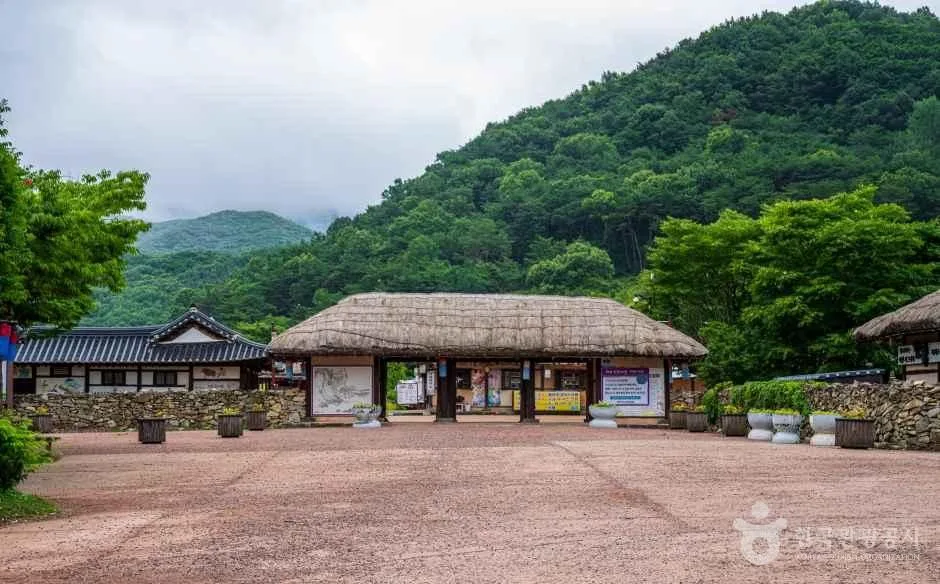
▲ 초가지붕 건물이 있는 마을 입구 쪽 풍경. 매표소 위치를 확인하려면 현장 안내를 따라야 한다. 사진=한국관광공사
3. 가는 길 — 대중교통은 공식 안내가 구체적이다
| 방법 | 안내 내용 |
|---|---|
| 시내버스 | 온양온천역(1번 출구 쪽 정류장 또는 유엘시티 정류장)에서 간선 100번·101번, 시간당 2대, 약 30분. '송악외암저잣거리(송악면환승센터)' 정류장 하차 |
| 자차(경부고속도로) | 천안IC에서 국도 21호선 → 읍내동 사거리 → 국도 39호선 → 송악외곽도로 → 외암민속마을 |
| 자차(서해안고속도로) | 서평택IC에서 국도 39호선 → 온양온천 → 송악나드리 → 읍내동 사거리 → 송악외곽도로 |
| 자차(당진·대전 방면) | 당진고속도로 유구IC → 39번 국도 송악 방면 |
공식 안내에는 서울 강남터미널에서 아산까지 약 1시간 30분, 용산역에서 온양온천역까지 약 1시간 30분(장항선) 등 소요 시간도 적혀 있지만, 기준 시점이 적혀 있지 않아 참고용으로만 보면 된다.
4. 마을 걷기 — 돌담·초가·기와 고택
공식 소개에 따르면 마을은 충청 지방 반가(양반집)의 고택과 초가, 돌담(총 5.3km), 정원이 보존돼 있다. 집주인의 관직명이나 출신지명을 따 참판댁·병사댁·감찰댁·참봉댁·종손댁·송화댁·영암댁·신창댁 같은 택호가 붙어 있다. 마을 배치는 입구의 물(다리)을 건너 약한 구릉지에 집들이 길을 따라 들어선 구조로, 가운데 안길에서 좌우로 샛길이 갈라진다고 설명한다. 서쪽 마을 어귀가 낮고 동쪽 뒤로 갈수록 높아지는 동고서저 지형이다.
| 이름 | 확인된 내용 | 비고 |
|---|---|---|
| 참판댁(큰댁) | 이조참판을 지낸 이정렬(1865~1950)이 살던 집이라 붙은 택호. 국가민속문화유산 제195호 | 민박 시설로도 안내됨 |
| 건재고택(영암군수댁) | 영암군수 이상익(1848~1897)이 살던 집, 문화재 지정. 국가민속문화유산 제233호 | 마을안내도에 '아산건재고택'으로 표기. 국가유산청 목록 명칭은 '아산 외암마을 건재고택'(참판댁도 '아산 외암마을 참판댁', 모두 국가민속문화유산) |
| 송화댁 | 송화군수를 지낸 이장현(1779~1841)에서 따온 택호 | 민박 시설 목록에 포함 |
| 감찰댁·참봉댁 | 마을안내도 '마을대표시설'에 포함 | 감찰댁은 별도 민박 사이트도 안내됨 |
| 외암민속관·매표소 | 마을안내도 대표시설 A·B | 월요일 휴관 안내는 TourAPI에 '민속관 등'으로 표기 |
| 디딜방아·연자방아·느티나무·외암이간사당 | 마을안내도 대표시설 | 세부 설명은 확인하지 못했다 |
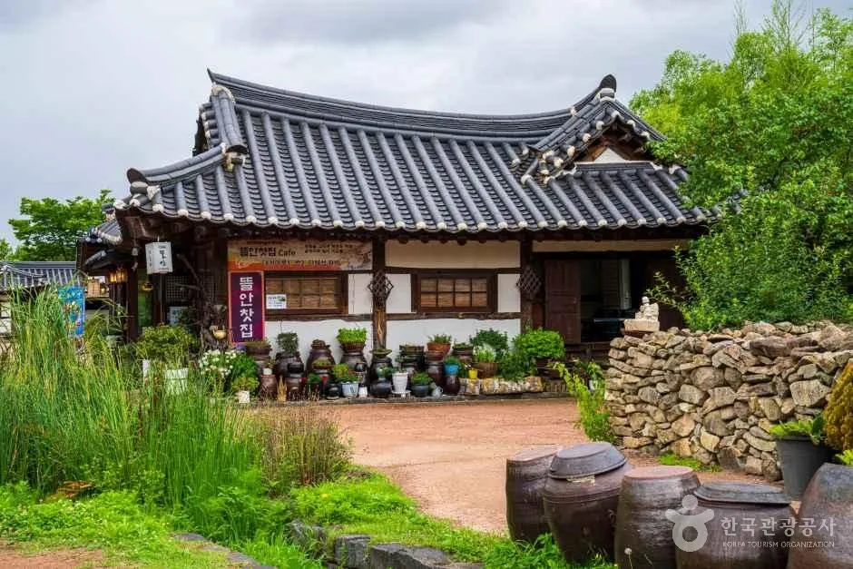
▲ 기와집 앞 장독과 돌담. 어느 고택인지는 확인하지 못했다. 사진=한국관광공사
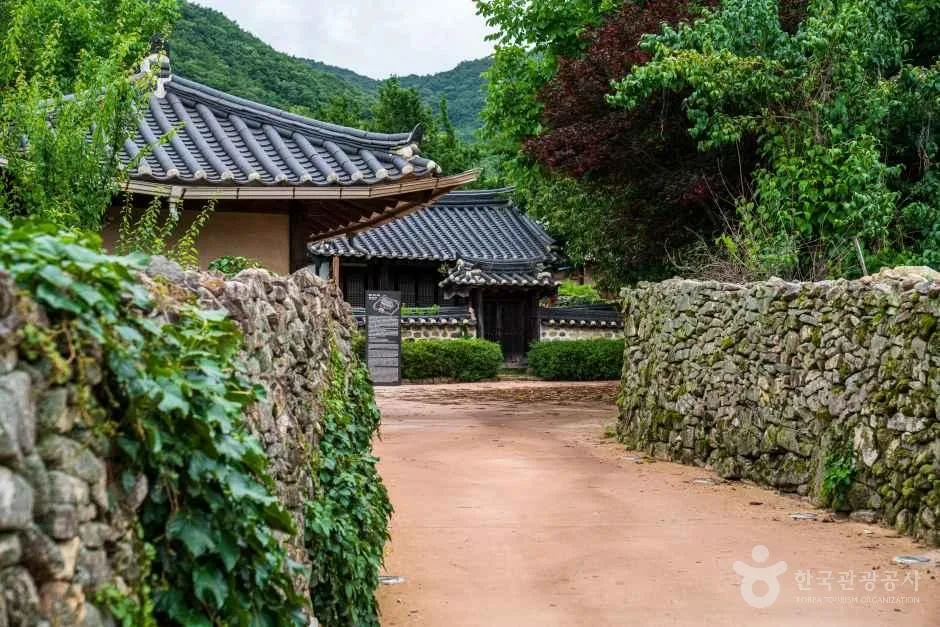
▲ 담쟁이 덮인 돌담 모퉁이와 기와 건물. 사진=한국관광공사
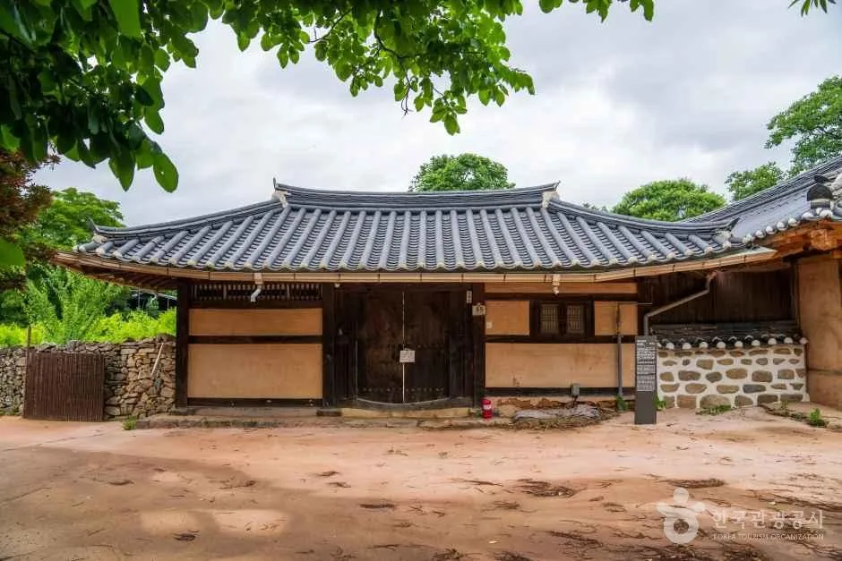
▲ 기와지붕 한옥 본채와 흙마당. 어느 집인지는 확인하지 못했다. 사진=한국관광공사
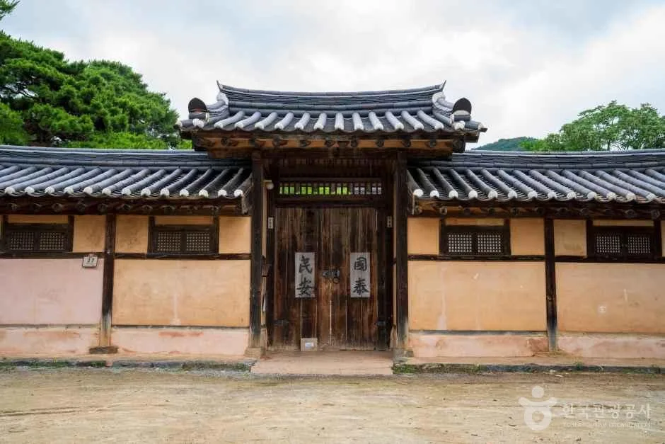
▲ 대문이 달린 기와 건물 정면. 거주 가옥은 사전 양해 없이 들어갈 수 없다. 사진=한국관광공사
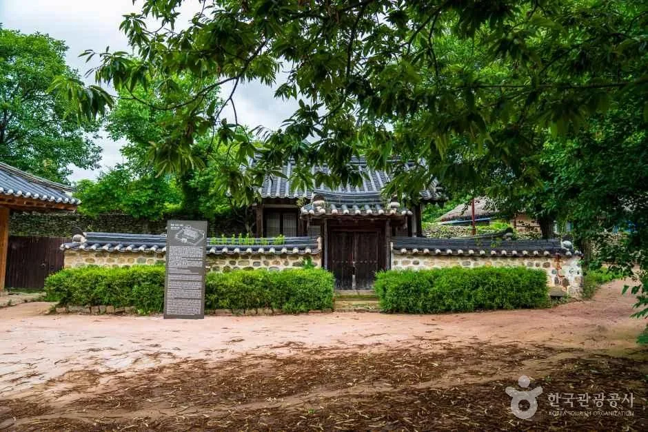
▲ 안내석이 선 기와 고택 앞 길. 사진=한국관광공사
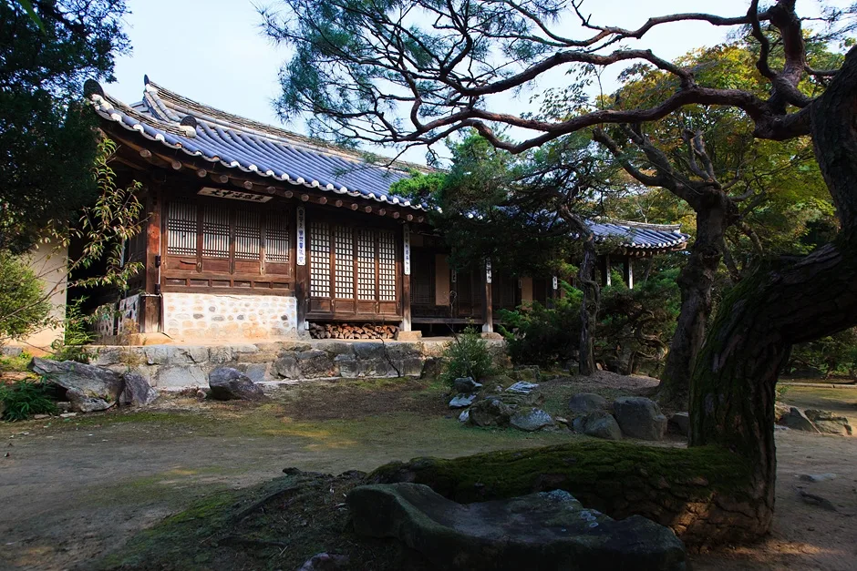
▲ ▲ 소나무 가지 아래 보이는 기와집. 한국관광공사 '아산 외암마을 건재고택' 사진 묶음 중 하나이며 건물명은 사진만으로 단정하지 못한다. 사진=한국관광공사
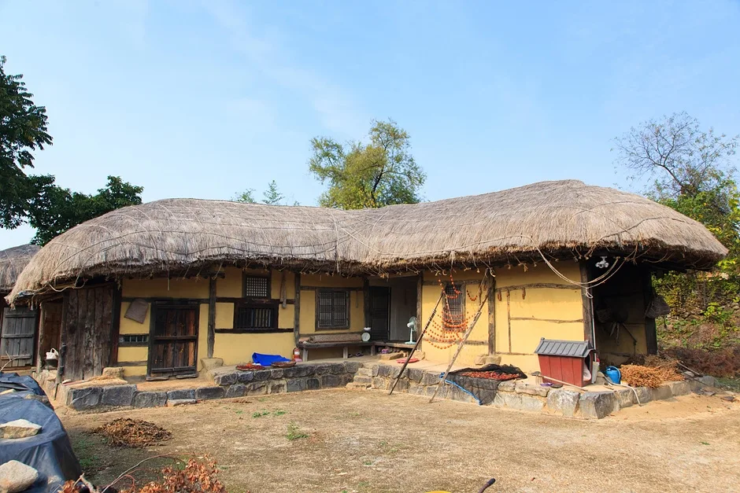
▲ ▲ 초가지붕을 얹은 흙벽 한옥. 건재고택 사진 묶음 중 하나이며 어느 건물인지는 확인하지 못했다. 사진=한국관광공사
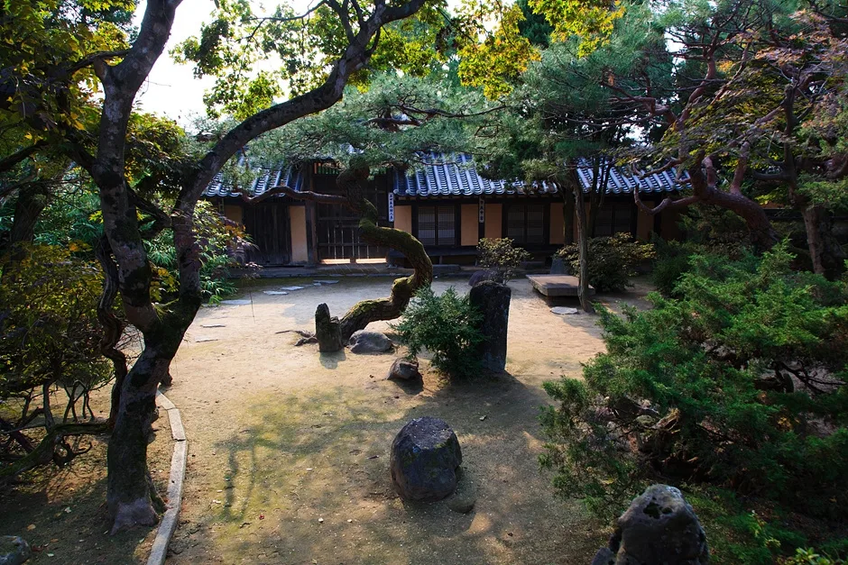
▲ ▲ 정원석과 나무가 놓인 고택 마당. 건재고택 사진 묶음 중 하나이며 촬영 시기는 확인하지 못했다. 사진=한국관광공사
5. 연못·물길 — 설화산 계곡물을 끌어온 마을
마을 공식 소개는 마을 뒷산인 설화산 계곡에서 흘러내리는 시냇물을 끌어들여 연못의 정원수나 방화수로 쓴다고 설명한다. 설화산은 다섯 봉우리가 솟아 오봉산이라고도 불린다고 한다. 연못이 구체적으로 어느 고택에 있는지, 지금도 같은 방식으로 쓰이는지는 확인하지 못했다. 이번에 확인한 한국관광공사 사진 중에는 연못 자체를 찍은 사진이 없어 개울 쪽 풍경만 싣는다.
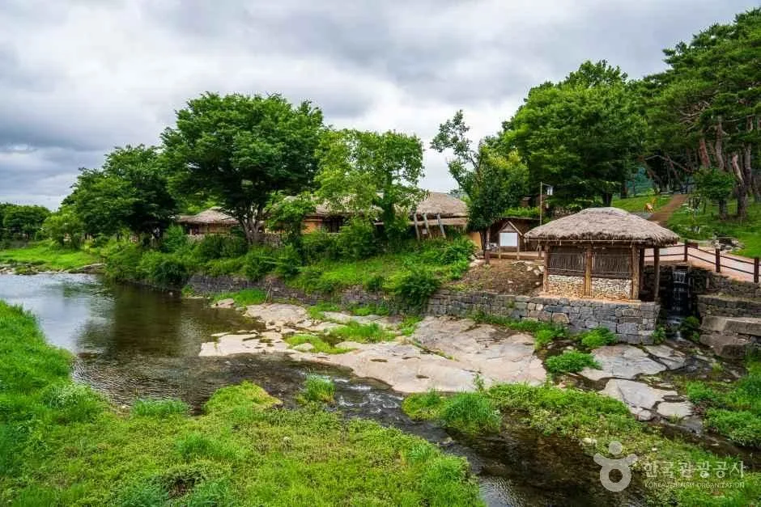
▲ 개울을 낀 마을 물가 풍경. 연못이 아니라 개울 사진이다. 사진=한국관광공사
6. 가을 외암마을 — 확인된 행사와 확인 못 한 것
가을 일정으로 확인되는 것은 짚풀문화제다. 공식 누리집은 짚풀문화제가 매년 10월에 외암민속마을 일원에서 열리는 외암 이간 선생 일대기 테마 축제라고 소개하고, 2026년 9월에는 제25회 짚풀공예 공모전·허수아비 만들기 사전신청·리플릿 공지를 올렸다. 마을 공식 누리집 공지 본문에는 개막 날짜 글자가 없고(리플릿은 이미지 파일), 9월 2일자 공모전 공지에는 '매년 10월중'이라고만 적혀 있다. 대신 축제 전용 누리집(zippul.co.kr)이 '제25회 짚풀문화제, 2026년 10월 16, 17, 18일 단 3일'이라고 직접 안내한다(10월 7일 확인). 이 누리집에는 프로그램·일정표·사전예약·오시는길 메뉴가 있고, 오시는길 안에 '주차장 안내'와 '교통통제 안내'가 따로 올라 있다(내용은 이미지·리플릿 형식이라 확인하지 못했다). 문의는 아산시 콜센터 1422-42로 안내돼 있다.
| 항목 | 내용 | 확인 상태 |
|---|---|---|
| 2026년 제25회 일정 | 10월 16일~18일(3일) | 축제 전용 누리집 zippul.co.kr 안내. 프로그램·주차·교통통제는 방문 전 같은 누리집에서 확인 |
| 2025년(제24회) 기록 | 10월 17~19일, 10:00~18:00, 입장 무료(일부 유료), 주최 아산시·외암민속마을보존회 | 한국관광공사 TourAPI(2025년 정보) |
| 2025년 교통 안내 | "주말 주차가 제한되니 임시주차장 셔틀버스와 온양온천역 대중교통 이용 권장" | 아산시 관계자 발언을 전한 지역 매체 보도. 올해 같은 방식인지는 미확인. 같은 보도 계열은 2025년 임시주차장 600대, 온양온천역 셔틀버스 40분 간격이라고 전했다(지역 매체) |
| 프로그램 성격 | 짚풀 체험·전시·경연, 전통고택 체험, 전통 상여행렬, 초가 이엉잇기 재현 | TourAPI·공식 누리집 소개(과거 행사 기준) |
| 고구마캐기 체험 | 9월 중순~10월 말, 1인 12,000원 | 공식 누리집(단체체험으로 분류) |
| 전통 벼베기 체험 | 10월 초·중순, 1인 12,000원, 초등 5학년 이상 | 공식 누리집(단체체험으로 분류) |
| 홧톳불 체험(고구마·밤) | 가을~겨울, 1인 25,000원 | 공식 누리집(단체체험으로 분류) |
| 은행나무·감나무·단풍 시기 | — | 이번에 확인한 공식·공공 자료에서 마을 안 단풍·은행·감 풍경과 시기를 찾지 못했다 |
가을 풍경을 구체적으로 소개하는 글이 일부 있지만, 공식 자료로 대조되지 않아 이 기사에서는 시기와 수종을 적지 않았다. 축제 기간에는 마을 내 차량 출입이 따로 제한될 수 있다고 공식 민박 안내에 적혀 있다.
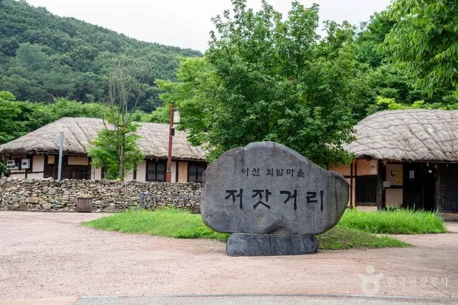
▲ '저잣거리' 표지석과 초가지붕. 마을 앞 저잣거리는 조선시대 시장을 재현한 곳으로 소개된다. 사진=한국관광공사
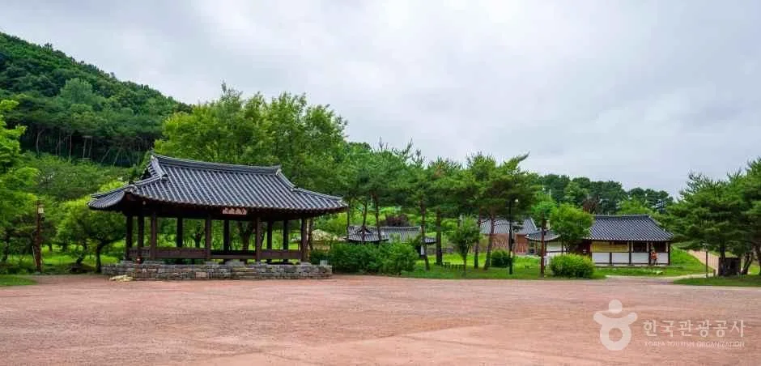
▲ 넓은 마당 옆 기와 정자. 행사가 열리는 장소인지는 확인하지 못했다. 사진=한국관광공사
7. 체험·민박 — 개인은 현장 접수만 된다
공식 누리집은 개인 체험(1~10명)은 현장 접수만 가능하고 접수 시간은 9:30~11:00, 오후 1:30~4:00이라고 안내한다. 25명 이상 단체는 별도 예약이다. 항목마다 '개인', '단체', '개인·단체'로 구분돼 있어 가을 계절 체험은 대부분 단체 전용으로 분류된다.
| 체험 | 1인 체험비 | 시간·구분 |
|---|---|---|
| 한지수첩·한지연필꽂이·한지손거울·한지부채 등 | 12,000원 | 연중, 개인·단체, 40분 안팎 |
| 도자기 냄비받침 액자 | 18,000원 | 연중, 개인·단체, 50분 |
| 도자기 풍경 이야기 | 20,000원 | 연중, 개인·단체, 50분 |
| 솜사탕 만들기 | 12,000원 | 연중, 개인, 20~30분 |
| 떡메치기 | 12,000원 | 3~11월, 단체 |
| 고추장 체험(300g) | 17,000원 | 3~11월 초, 단체 |
| 가마솥밥 해먹기 | 22,000원 | 연중, 단체, 100~120분 |
| 다도체험과 예절교육 | 25,000원 | 3월 중순~10월 말, 단체, 60분 |
민박은 공식 누리집 온라인 예약으로만 받는다. 입실 오후 2시, 퇴실 오전 11시이고, 민박 손님은 오후 2시부터 매표소를 무료로 통과한다. 마을에 차단기가 있어 예약할 때 등록한 차량번호만 진입할 수 있고, 민박집 앞 주차는 1대만 되며 나머지는 짐을 내린 뒤 무료 주차장으로 옮겨야 한다(어기면 견인될 수 있다고 안내). 식사는 제공되지 않고 취사도구만 있다. 공식 예약 화면에서 확인한 가격은 일부뿐이다.
| 항목 | 내용 |
|---|---|
| 객실 수 | 월별 현황표에 4인실~16인실 객실이 여러 개 올라 있다(정확한 객실 수는 세지 않았다) |
| 가격 확인분 | 교수댁·마을첫집(4인실) 100,000원, 초가스테이 피나(4인실) 평일 월~목 20만 원 |
| 그 밖의 객실 | 요금과 예약 가능 여부는 확인하지 못했다(실시간 현황은 공식 누리집) |
| 별도 예약처 | 감찰댁·하서원·초가스테이 피나는 각자 예약 연락처가 안내됨 |
| 문의 | 체험·민박 041-541-0848 |
8. 인근 코스 — 곡교천 은행나무길·신정호·설화산
외암마을에서 이어 가기 좋은 곳은 이 사이트에서 이미 다룬 두 곳이다. 은행나무 가로수길은 아산 곡교천 은행나무길 기사에서 충무교~현충사 입구 2.1km 구간, 단풍 절정 시기(보통 10월 말~11월 중순), 주차 정보를 따로 정리했다. 한국관광공사 좌표로 계산한 외암마을~현충사 직선 거리는 약 8.5km이고, 도로 거리와 소요 시간은 확인하지 못했다. 호수 산책은 아산 신정호 기사를 참고하면 된다. 신정호관광지까지 직선 거리는 약 5.3km다.
| 장소 | 외암마을에서 | 근거·비고 |
|---|---|---|
| 곡교천 은행나무길(현충사 입구 쪽) | 직선 약 8.5km | 한국관광공사 좌표 계산. 이 사이트 기존 기사 참고 |
| 신정호관광지 | 직선 약 5.3km | 한국관광공사 좌표 계산. 이 사이트 기존 기사 참고 |
| 설화산 | 마을 뒷산 | 공식 누리집: 500m가 안 되는 낮은 산, 윗산막골 출발 1.6km 왕복 2~3시간 코스라고 소개 |
| 강당골(광덕산 계곡) | 1주차장 주소가 강당로 | 공식 누리집이 인근 관광지로 소개. 개방·통제 상태는 확인하지 못했다 |
✅ 출발 전 체크리스트
· 입장료 어른 2,000원·청소년/군인/어린이 1,000원, 아산시민·65세 이상·7세 이하(보호자 동반) 등 면제
· 운영 09:00~18:00(하절기 3~10월)/17:00(동절기 11~2월). 월요일 민속관 등 일부 시설 휴관 여부는 매표소 041-536-8499 확인
· 차량은 마을 안으로 못 들어간다. 무료 주차장 1·2주차장 이용, 민박 손님은 등록 차량만 진입
· 주민 거주 가옥은 허락 없이 들어가지 않기, 취사·야영·흡연 금지
· 제25회 짚풀문화제는 2026년 10월 16~18일(축제 누리집 안내), 주차·교통통제는 축제 누리집 확인
· 개인 체험은 현장 접수만, 9:30~11:00·13:30~16:00
9. 정리
외암민속마을은 국가민속문화유산 제236호로 지정된 아산 송악면의 500년 전통 마을로, 개인 입장료는 어른 2,000원이고 마을 안으로 차는 들어갈 수 없다. 하절기 09:00~18:00, 동절기 09:00~17:00(공식 안내), 주차는 1·2주차장 무료다.
'중요민속문화유산'이라는 표기는 확인하지 못했고 국가유산청 자료의 현재 명칭은 국가민속문화유산이다. 월요일 일부 시설 휴관의 구체적 범위, 공식 이용안내에 달이 적히지 않은 하절기·동절기 구분(관광공사 기준 3~10월/11~2월), 마을 안 가을 단풍·은행·감 풍경은 공식 자료로 확인하지 못했으니 가기 전에 매표소나 공식 누리집에서 다시 확인하자. 이어 갈 코스는 곡교천 은행나무길과 신정호다.